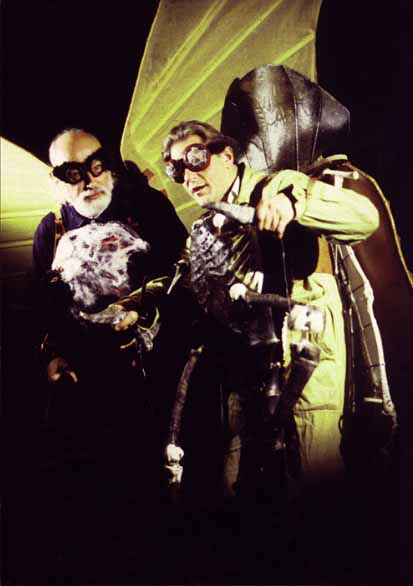
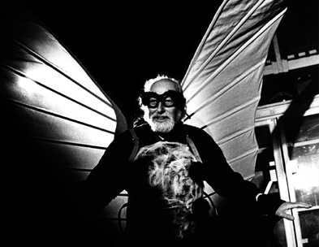

Dick
Vane-Wright
Former Keeper of Entomology
Natural History
Museum
-
Renowned for work on
butterfly systematics, particularly Heliconius butterflies and scent
organs in Satyridae
-
Collaboration with Paul
Williams and Chris Humphries on biodiversity assessment using a GIS program,
WORLDMAP, developed by Paul Williams

... here starring
in "Consilience", a video project by Jan Fabre. The video, now a
scarce collectors' item, was shown at the Natural History Museum, London,
Thurs 13 January-Tuesday 29 February 2000. © The
Arts Catalyst.
Quoting from the flier issued by the Natural
History Museum and Arts Catalyst:
"In the depths of the [Natural History]
Museum's vast collections a dialogue has been taking place between eminent
entomologists and artist Jan Fabre, great-grandson of the famous naturalist,
Jean-Henri Fabre. Transformed into the insects of their study with
exotic costumes/sculpture, the scientists encounter Fabre, himself emissary
of the beetle. The result is A Consilience - a sharing of
knowledge across disciplines - manifested in a video installation."
Back to Portraits
Back to Jim
Mallet Home Page